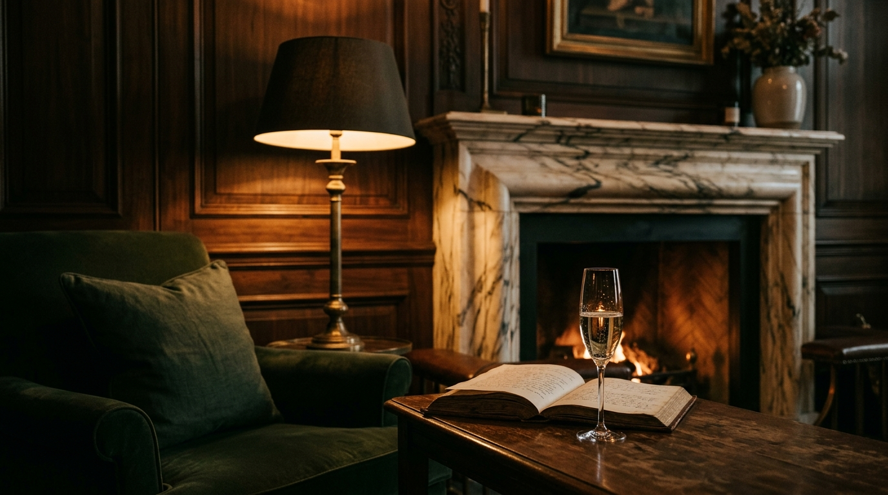
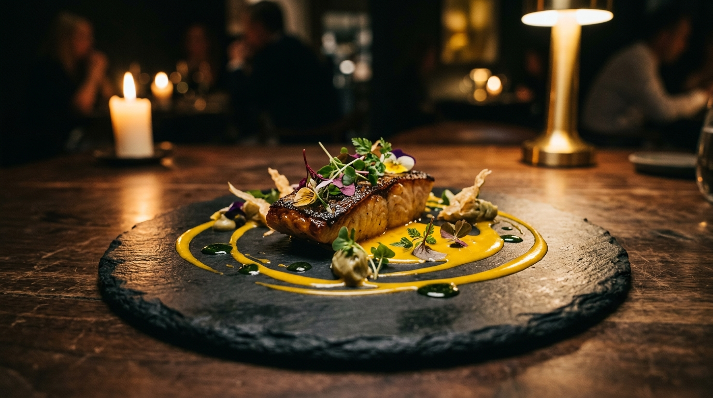
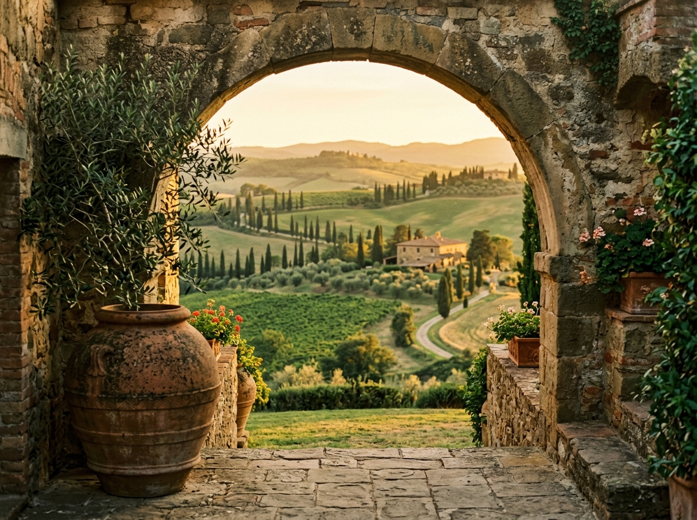
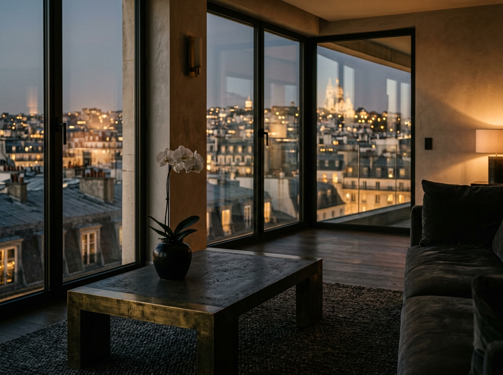
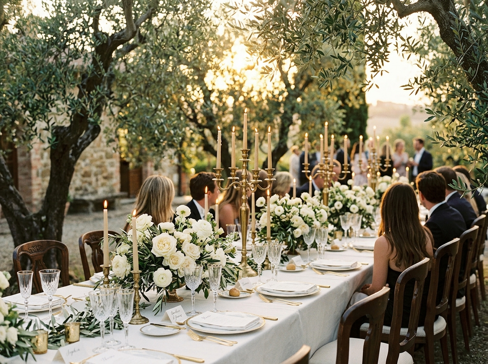
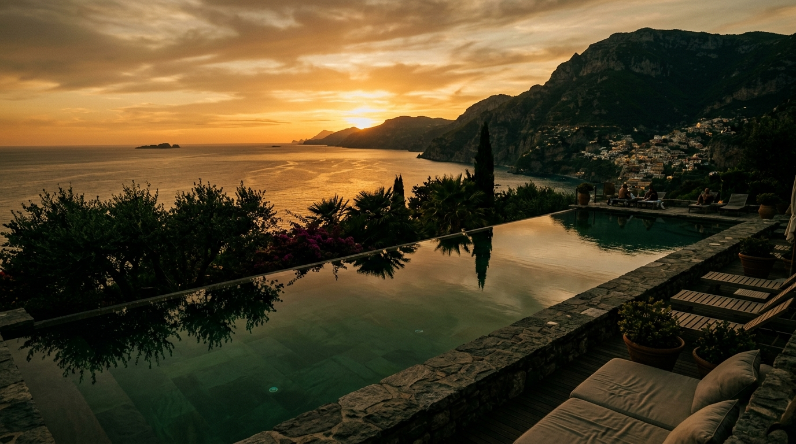

Récits de séjours, portraits de lieux, réflexions sur ce que le luxe signifie vraiment — par notre équipe et nos contributeurs de confiance.
Le Journal VNH n'est pas une vitrine commerciale. C'est l'endroit où nous partageons ce qui nous a marqués — un lieu, une rencontre, une façon de faire les choses autrement.
Quand la discrétion devient art de vivre — retour sur une semaine en villa isolée sur les hauteurs de Ramatuelle.
Lire →
Quatre chefs, une oliveraie centenaire, un menu composé à l'improviste au fil du marché de Forcalquier.
Lire →
Un domaine à San Miniato, une cave du XVIe siècle, et le silence comme seul luxe — notes d'un séjour de novembre.
Lire →
En hauteur, la ville devient un panorama. La rue, un murmure lointain. Retour sur trois adresses parisiennes hors du commun.
Lire →
Le charme d'un domaine isolé et les contraintes logistiques qu'il impose. Comment nous les anticipons pour que vous n'y pensiez jamais.
Lire →
Le mot est partout. La réalité, beaucoup plus rare. Quelques critères pour distinguer l'exception véritable de son imitation.
Lire →Il y a une différence entre un service attentif et un service silencieux. Le premier vous fait sentir pris en charge. Le second vous fait oublier que quelqu'un s'en charge.
Pendant sept nuits à Ramatuelle, nous n'avons jamais eu à demander quoi que ce soit. Le café était là avant que nous descendions. Les vitres avaient été nettoyées pendant la nuit. La bougie dans la salle de bain avait été remplacée — sans que nous ayons remarqué qu'elle était consumée.
Ce niveau d'anticipation ne s'improvise pas. Il repose sur une connaissance fine du client, une équipe formée à observer sans surveiller, et une culture maison qui valorise le résultat invisible plutôt que le geste démonstratif.
C'est précisément ce que nous cherchons — et rarement trouvons — dans les propriétés que nous sélectionnons pour nos clients.
L'idée était simple : réunir quatre chefs que nous admirons, sans programme défini, dans une oliveraie centenaire au-dessus de Forcalquier. Chacun apportait un plat. Le menu s'est construit au fil du marché du matin, de ce qui poussait dans le jardin et de ce que chacun avait envie de faire ce jour-là.
Sept heures plus tard, douze personnes avaient partagé neuf plats, quatre vins naturels et une conversation que personne ne voulait terminer. Pas de menu imprimé, pas de carte, pas d'intitulés alambiqués.
L'improvisation la plus préparée qui soit. Ce format existe désormais dans notre catalogue d'expériences — pour des groupes de huit à seize personnes, sur demande.
« Je lis le Journal VNH chaque mois. Pas pour chercher une destination — pour retrouver une façon d'envisager le voyage. »— Un lecteur, Genève